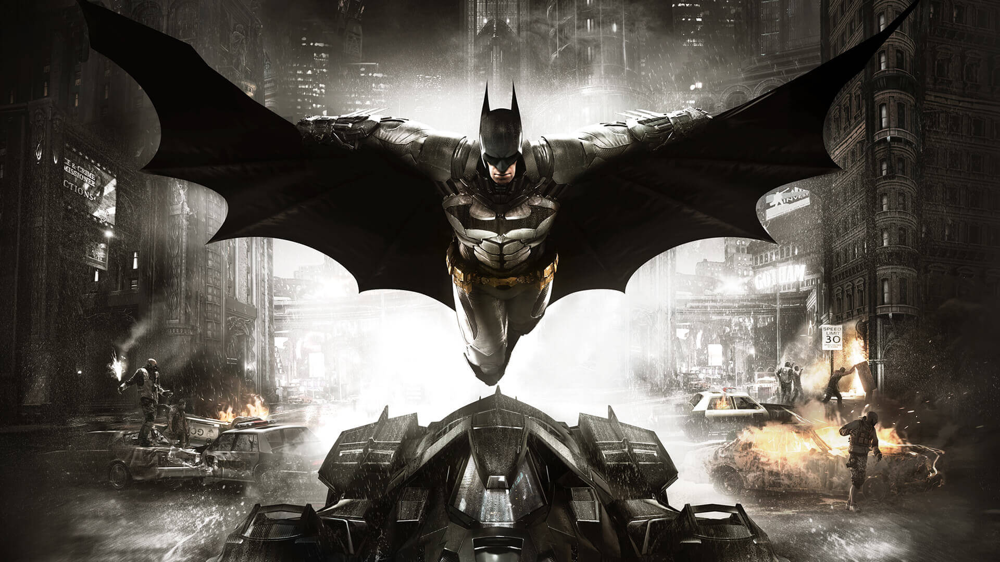
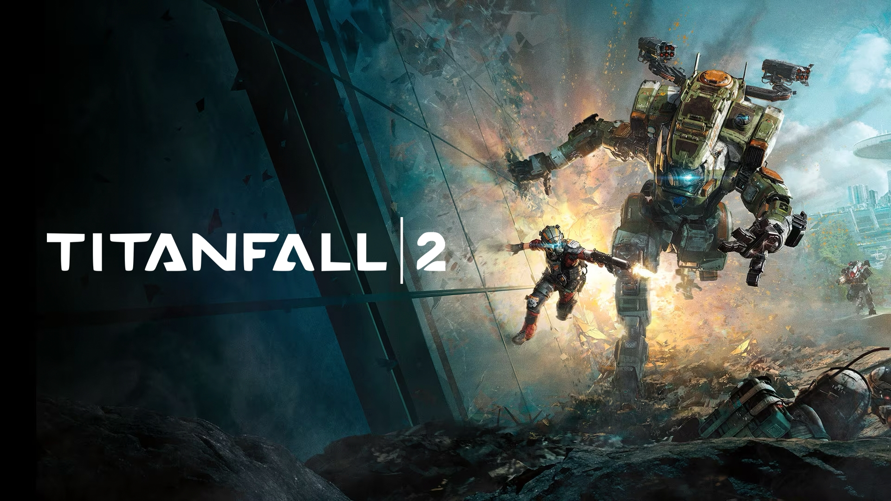
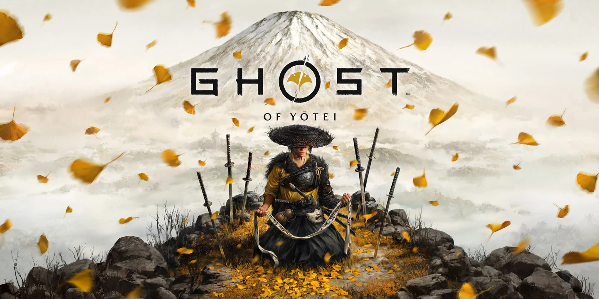
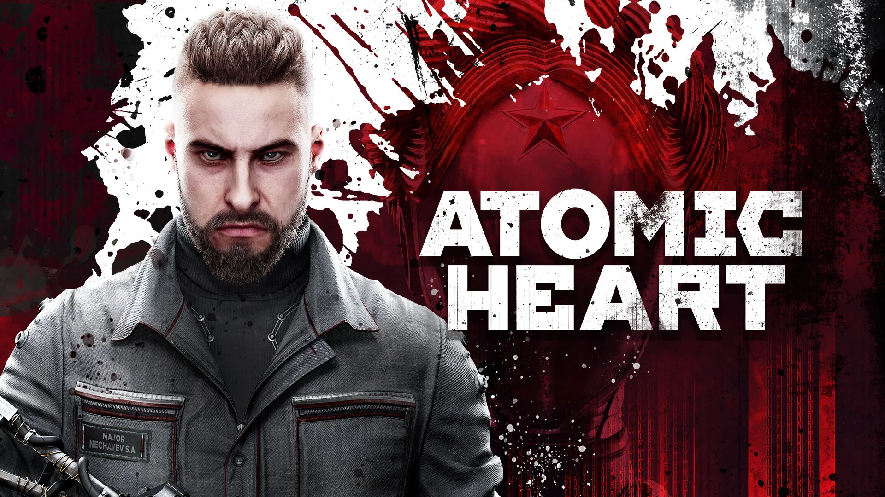

Top 5 Videojuegos que recomiendo
Si alguna vez te pasó eso de quedarte mirando la pantalla sin saber qué jugar, estas en el lugar correcto. Acá no venimos a tirar listas aburridas: venimos a encontrar ese juego que te roba horas sin que te des cuenta. Desde aventuras épicas que te hacen sentir protagonista, hasta joyitas ocultas que parecen simples… pero te atrapan como trampa de oso.
5. Batman: Arkham Knight
Batman: Arkham Knight, web oficial
-
4. Titan Fall 2
Titan Fall 2, web oficial
3. Ghost of Yōtei
Ghost of Yōtei web
2. Cronos: The new dawn
Cronos: The new dawn web
1. Atomic Heart
Atomic Heart, web oficial




